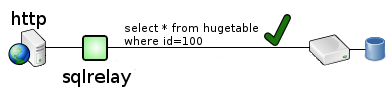
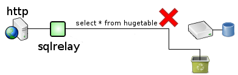

Query filtering prevents queries that match a certian pattern from being run at all. There are often certain queries that will bring the entire database to its knees. A common use for query filtering is to identify those queries and prevent them from being run.
For example, select * from hugetable where id=100 might be fine...

...but select * from hugetable without a where clause might crush the database.

SQL Relay can be configured to allow one and reject the other.
A complete descripton of query filtering with example configuration files is given here.